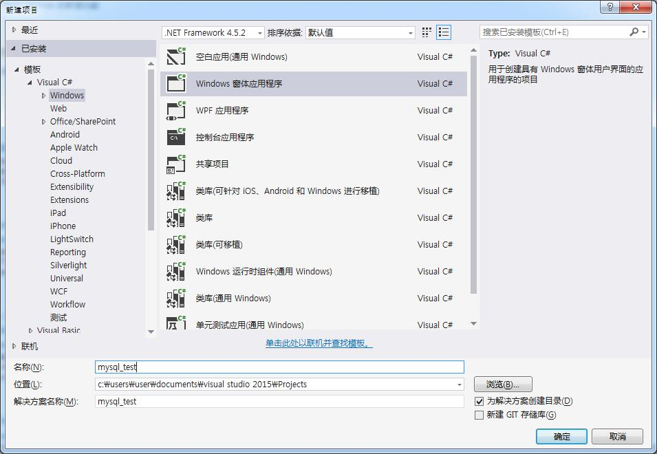

MySQL提供了很多的连接器和API来帮助在不同平台的使用，具体可以查看官方文档Chapter 27 Connectors and APIs 。
本文的环境设置：Win7, MySQL 5.7.13, Visual Studio 2015.
安装 Connector/Net
首先下载MySQL的Net连接器。
下载地址为：https://dev.mysql.com/downloads/file/?id=463758
安装后默认地址为：C:\Program Files (x86)\MySQL\MySQL Connector Net 6.9.9\Assemblies ，目录下有两个版本文件夹对应VS不同的版本V4.0(VS2010) 和 V4.5(VS2012/2013/2015)，我选择4.5. 可以在Documentation中发现帮助手册 ConnectorNET.chm。
C#中添加MySql.Data.dll引用
新建一个窗体项目。

添加引用V4.5 文件夹下的MySql.Data.dll 。
MySqlCommand 类： 代表对MySQL数据库进行执行操作的SQL语句。MySqlDataAdapter 类： 代表一组数据命令和数据库连接，用于填充数据库和更新MySQL数据库。MySqlConnection 类： 代表与MySQL服务器数据库的开放式连接。
1 | public partial class Form1 : Form { |
运行结果：
C#中添加更新和删除功能
首先如果要对一个表进行更新修改，这个表一定要有主键。
1 | public partial class Form1 : Form |
[1]. 参考: https://dev.mysql.com/doc/refman/5.7/en/entering-queries.html
[2]. 参考: http://blog.csdn.net/liyuqian199695/article/details/53556639